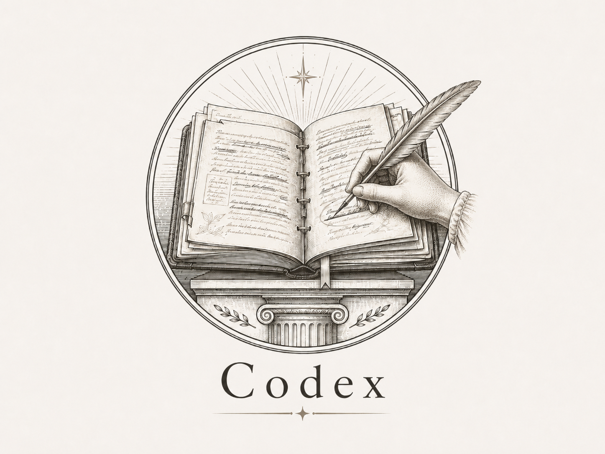

Les sept écrans validés aux wireframes, à l'échelle réelle : 1a l'accueil, 2a rédiger, 2b choisir, 2c surligner, 2d se juger, 2e le retour d'un texte, 2f le retour d'un choix. Pigment Codex #2E4A3C, fond de module #F0EADE, liseré bordeaux #6E2A2C, action en vert estompé #5F7365. Aucune note, aucune lettre, aucun pourcentage de complétion.

CodexExplique ce que Descartes appelle « je pense, donc je suis », et dis pourquoi il en fait un point de départ.
Je m'avisai que, pendant que je voulais ainsi penser que tout était faux, il fallait nécessairement que moi qui le pensais fusse quelque chose. Et remarquant que cette vérité, je pense, donc je suis, était si ferme et si assurée, que toutes les plus extravagantes suppositions des sceptiques n'étaient pas capables de l'ébranler, je jugeai que je pouvais la recevoir sans scrupule pour le premier principe de la philosophie que je cherchais. Puis, examinant avec attention ce que j'étais…
Descartes cherche une vérité qui résiste à tout. Il commence par douter de tout ce qu'il croit savoir : ses sens peuvent le tromper, ses raisonnements peuvent être faux, et même le monde autour de lui pourrait n'être qu'un rêve.
Mais il remarque une chose : pendant qu'il doute, il pense. Et s'il pense, alors il existe au moins comme celui qui pense. C'est pour ça qu'il en fait un point de départ
Descartes cherche une vérité qui résiste à tout. Il commence par douter de tout ce qu'il croit savoir : ses sens peuvent le tromper.
Mais pendant qu'il doute, il pense. Et s'il pense, il existe au moins comme celui qui pense
Parmi ces quatre lectures du passage, répartis 100 jetons selon celle que tu crois juste. Plus tu en poses sur une, plus tu la crois vraie.
Et remarquant que cette vérité, je pense, donc je suis, était si ferme et si assurée, que toutes les plus extravagantes suppositions des sceptiques n'étaient pas capables de l'ébranler, je jugeai que je pouvais la recevoir sans scrupule pour le premier principe de la philosophie que je cherchais.
Surligne le passage où le raisonnement se casse, puis dis en quelques lignes ce qui ne va pas.
L'auteur veut montrer que la liberté n'existe pas. Il rappelle d'abord que tous nos actes ont une cause, et qu'aucun d'eux ne sort de rien. Or si tous nos actes ont une cause, c'est donc que nous ne choisissons jamais rien, et que la liberté est une illusion complète. Il conclut que le sentiment de choisir n'est qu'une habitude que nous prenons pour une preuve.
Le saut est là : d'avoir une cause, on passe à ne rien choisir. Or une cause n'empêche pas de choisir
L'auteur veut montrer que la liberté n'existe pas. Il rappelle que tous nos actes ont une cause. Or si tous nos actes ont une cause, c'est donc que nous ne choisissons jamais rien. Il conclut que le sentiment de choisir n'est qu'une habitude.
Trois questions sur ce que tu viens de rendre. Ça ne se note pas : se tromper en se jugeant ne coûte rien.
As-tu dit ce que l'auteur soutient, avec tes mots ?
Chacune de tes affirmations s'appuie-t-elle sur un passage précis ?
Ta dernière phrase répond-elle vraiment à la question posée ?
Trois questions. Ça ne se note pas.
As-tu dit ce que l'auteur soutient, avec tes mots ?
Chaque affirmation s'appuie-t-elle sur un passage précis ?
Descartes cherche une vérité qui résiste à tout. Il commence par douter de tout ce qu'il croit savoir : ses sens peuvent le tromper, ses raisonnements peuvent être faux, et même le monde autour de lui pourrait n'être qu'un rêve.
Mais il remarque une chose : pendant qu'il doute, il pense. Et s'il pense, alors il existe. C'est pour ça qu'il en fait un point de départ.
Descartes construit ensuite tout le reste sur cette première certitude.
Ton premier paragraphe dit exactement ce que fait Descartes : douter de tout, et pourquoi. C'est net, et c'est avec tes mots.
Tu dis qu'il existe parce qu'il pense, mais tu ne dis pas pourquoi cette vérité-là résiste au doute alors que les autres n'y résistent pas. C'est ce « pourquoi » que le texte demande.
Ta dernière phrase avance quelque chose que le passage ne dit pas. Appuie-la sur une ligne du texte, ou retire-la.
Reprends ton deuxième paragraphe : dis en une phrase pourquoi ce point de départ ne peut pas être mis en doute.
Ton premier paragraphe dit exactement ce que fait Descartes : douter de tout, et pourquoi.
Tu dis qu'il existe parce qu'il pense, mais pas pourquoi cette vérité-là résiste au doute.
Ta dernière phrase avance quelque chose que le passage ne dit pas.
Reprends ton deuxième paragraphe : dis en une phrase pourquoi ce point de départ ne peut pas être mis en doute.
C'est ce que le passage dit, et rien de plus : la pensée en cours suffit à établir l'existence de celui qui pense.
Descartes ne dit pas que le doute se retourne contre lui-même : il dit que même en doutant de tout, une chose reste debout — le fait de penser. La vérité tient au geste de penser, pas au contenu de ce qui est pensé.
Le doute qui doute de lui-même est une idée qui vient plus tard, chez d'autres auteurs. Ici, le doute est un instrument : Descartes s'en sert, il ne le prend pas pour objet.
Parmi ces quatre lectures du passage, répartis 100 jetons selon celle que tu crois juste.
C'est ce que le passage dit, et rien de plus.
Même en doutant de tout, une chose reste debout : le fait de penser. La vérité tient au geste de penser, pas à son contenu.
Ici, le doute est un instrument : Descartes s'en sert, il ne le prend pas pour objet.